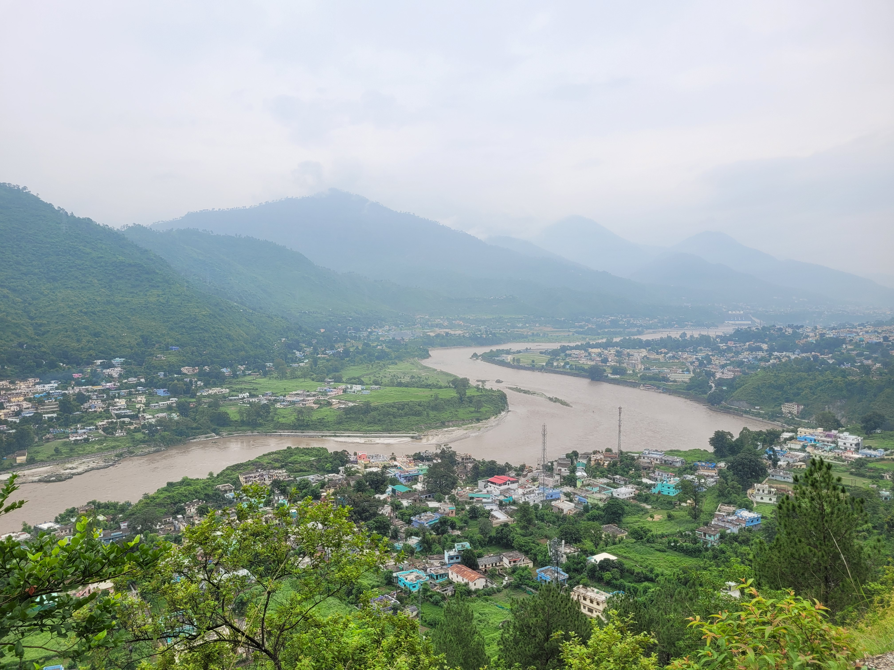
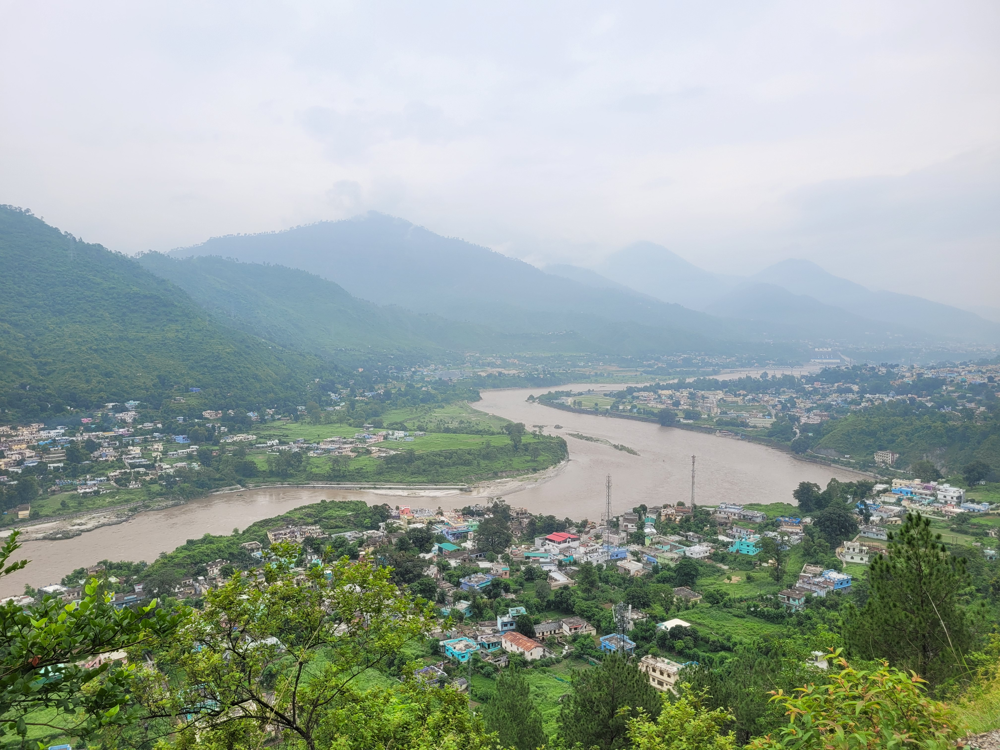

About Pauri Garhwal
Pauri Garhwal is a scenic hill district in Uttarakhand, India, known for its breathtaking Himalayan views, rich cultural heritage, and serene environment. It serves as the administrative headquarters of the Garhwal Division and is a perfect blend of natural beauty, spirituality, and history.
Attractions
- Kandoliya Temple – A temple dedicated to Kandoliya Devta, offering stunning hilltop views.
- Khirsu – A quiet and offbeat hill station offering scenic beauty and apple orchards.
- Tarkeshwar Mahadev Temple – A sacred and peaceful temple surrounded by dense deodar forests.
- Kyunkaleshwar Mahadev Temple – A historic Shiva temple built during the Katyuri dynasty.
- Chaukhamba Viewpoint – A famous sunset and sunrise spot with mesmerizing views of the Himalayas.
Climate
Pauri has a pleasant climate throughout the year. Summers are cool, while winters bring snowfall, making it a perfect getaway for nature lovers.
Culture
The people of Pauri Garhwal mainly follow Garhwali traditions with deep-rooted spiritual and cultural heritage. The region celebrates several traditional festivals, including Harela, which marks the beginning of the monsoon, Makar Sankranti (Uttarayani), celebrated with vibrant dances, fairs, and local delicacies, and the Bikhoti Festival, which signifies the new year of the Garhwali calendar. Local music and dance play an essential role in these celebrations, with performances such as Langvir Nritya, a martial dance showcasing agility and strength, and Pandav Nritya, which narrates mythological stories through rhythmic movements and expressions.
 
